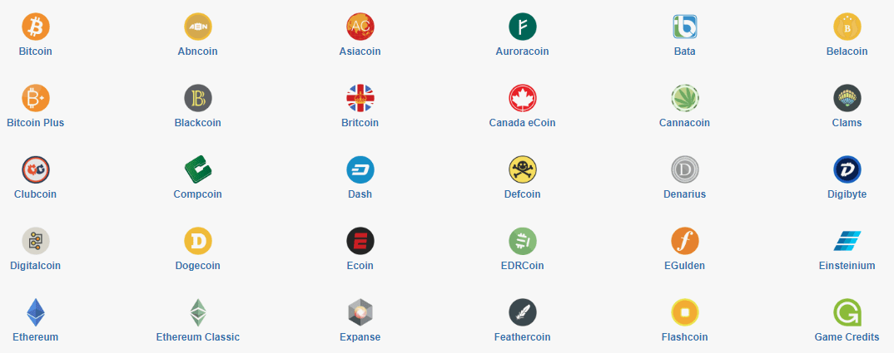
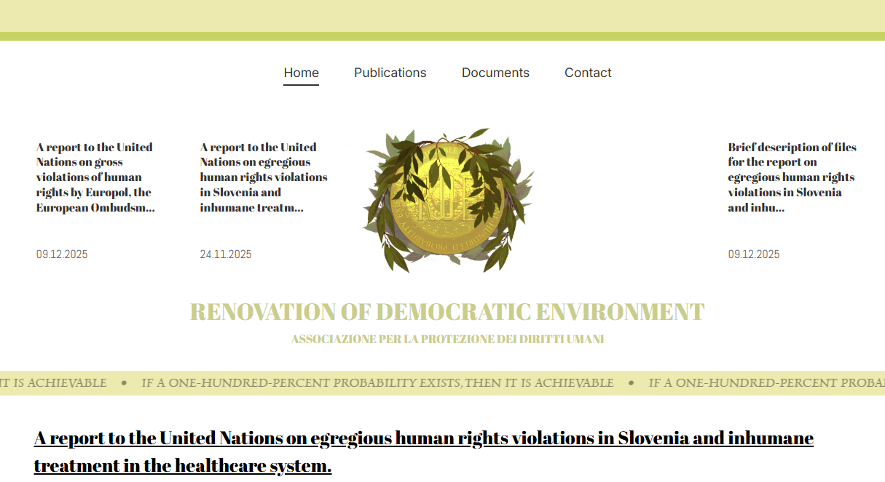

Hey, I'm Kirill Tarasof 👋
Python Backend & MERN Stack Developer · Warsaw, Poland
Experienced in microservices (FastAPI), MERN stack, and cloud deployments.
English B2 · open to remote worldwide.
About
I'm a full-stack developer with expertise in Python backend development and the MERN stack. I studied Computer Science at the University of Łódź (2018–2020, coursework completed). I'm passionate about building efficient systems and I'd still code for fun if it wasn't my job ❤️
My journey started with Python and Django, then expanded to microservices with FastAPI, and recently I've been working extensively with the MERN stack for Web3 and crypto projects. I'm also exploring Laravel for PHP-based projects.
Currently deepening my knowledge in:
- Advanced SQL & query optimisation
- AuthN/AuthZ patterns (OAuth2, JWT)
- Kubernetes operators & helm
- Web3 integration with MERN
Tech Stack
Backend Python
MERN Stack
Laravel / PHP
Databases
DevOps
Web3 & Other
Projects & freelance work

₿ MEHHC – MERN Web3 Platform
Cryptocurrency management platform (client: Emma O, Canada). Supports 10+ coins, cross-chain interactions, real-time fees, APY tracking, and Web3 wallet authentication (MetaMask/WalletConnect). 30% faster API, 99.9% uptime on AWS with CI/CD.

🛍️ Laravel E-commerce Platform
Full-featured e-commerce platform built with Laravel. Includes product management, shopping cart, user authentication, payment integration (Stripe), order management, and admin dashboard. Optimized queries with Eloquent and caching with Redis.

⚖️ RDE (human rights) — Django
Built and deployed rdeaps.com, a human rights organisation website. Custom admin for publications/documents, filtering + search, fully responsive.

📝 MERN Blog Platform
Full-stack blog platform with user authentication, rich text editor, comments system, categories, and admin dashboard. Features JWT authentication, image uploads, and responsive design with React Bootstrap.
Work experience
Backend Developer (Python / Microservices) · YouTeam
remote worldwide
- Designed microservices using async FastAPI (schedule, post feed, notifications).
- Containerised with Docker, wrote K8s manifests, collaborated with frontend/DevOps on API contracts.
- Participated in architectural pivots, maintained code quality via Git & reviews.
Frontend Developer (JavaScript / React) · Straż Wodna
remote, Poland
- Built responsive UIs with React functional components, connected REST APIs via Axios.
- Implemented error/loading states, translated mockups to cross-browser interfaces.
- Configured docker-compose & nginx for deployment.
MERN Stack / Web3 Developer · Freelance (client Emma O, Canada)
MEHHC platform
- Developed full-stack MERN application with MongoDB, Express.js, React, and Node.js.
- Built multicoin transfer system (10+ cryptos) with real-time fee estimation and APY tracking.
- Integrated Web3 libraries (ethers.js, web3.js) with MetaMask and WalletConnect.
- Optimized API performance (30% faster), deployed on AWS with CI/CD (99.9% uptime).
Full-Stack Developer (Django) · Freelance (client RDE, Slovenia)
rdeaps.com
- Built human rights website with Django, custom admin, document filtering, search.
- Responsive frontend with HTML/CSS/templates, deployed on Linux VPS (Nginx, Gunicorn, PostgreSQL).
- DNS & SSL configuration.
Laravel Developer · Freelance (client TechStart, Germany)
CRM System
- Developed custom CRM system using Laravel with Eloquent ORM and Blade templates.
- Implemented user roles, permissions, and comprehensive admin dashboard.
- Integrated RESTful APIs for third-party services and optimized database queries.
- Deployed on Linux server with Nginx and MySQL, configured CI/CD pipeline.
University of Łódź, Poland
Computer Science (Applied Informatics) – coursework completed
- Left to pursue full-time development.
Contact me
📍 Warsaw, Poland · English B2 · open to remote · Python & MERN Stack